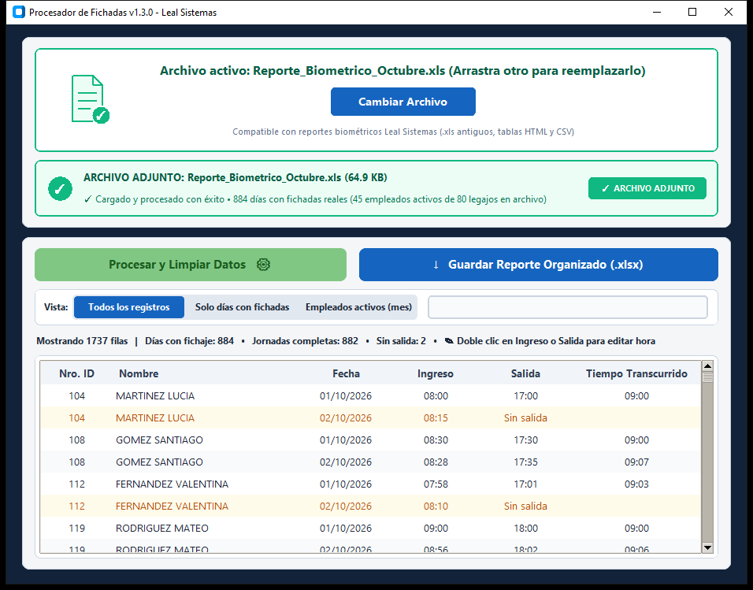

01
Descargar portable
Guarde ProcesadorFichadas.exe en el Escritorio o carpeta de trabajo y ábralo con doble clic sin permisos de administrador.
Herramienta de escritorio para Recursos Humanos que traduce el 100% de los reportes crudos del reloj biométrico Leal Sistemas, permite editar horarios manualmente con doble clic y exporta un libro Excel con fórmulas de cálculo automático en vivo.
.exe sin instalación
.xls y .csv crudos

Guarde ProcesadorFichadas.exe en el Escritorio o carpeta de trabajo y ábralo con doble clic sin permisos de administrador.
Arrastre el reporte mensual (ej. Reporte_Biometrico_Octubre.xls) directamente al recuadro superior o selecciónelo desde el explorador.
Revise el 100% de los registros en su orden original o haga doble clic en Ingreso / Salida para cargar horas manuales con cálculo inmediato.
Genere el libro .xlsx con fórmulas activas de cálculo automático, formato condicional inteligente y las 3 hojas listas para filtrar.
.xlsx
Conserva el 100% de los registros del archivo original en su mismo orden, con fórmulas nativas de Excel que recalculan el tiempo transcurrido al editar cualquier hora.
HH:MMTotalizador de todos los legajos del archivo conectado mediante fórmulas dinámicas a la Hoja 1: si agrega una hora manual en la Hoja 1, el resumen se actualiza solo.
SUMAR.SI.CONJUNTO de horas mensuales y promedioVista auxiliar depurada únicamente con los días que registraron marcas biométricas en el período, manteniendo las fórmulas de cálculo de jornada.